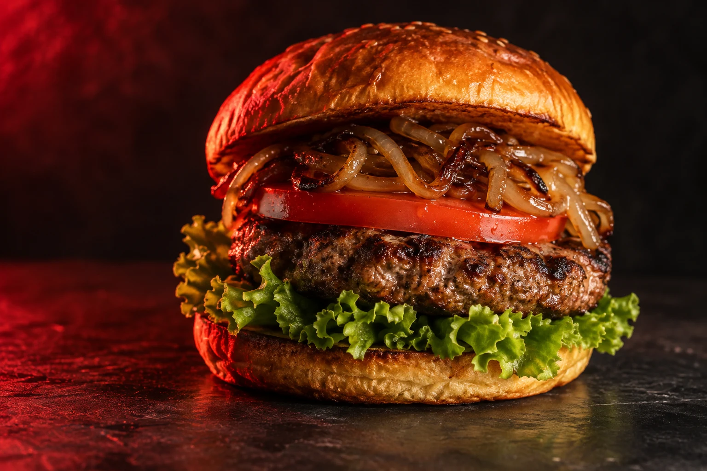

IT’S ALL IN THE BITE.
אש.
קראנץ׳.
עוד ביס.
אנחנו אוהבים את הדברים פשוטים: לחמנייה שמחזיקה הכול, ירקות שנותנים קראנץ׳ וביס שלא צריך להסביר.

01 / 02

BIG BITE. NO SMALL TALK.
קראסט מבחוץ. עסיסיות מבפנים.
כל השאר יכול לחכות.
MAKE IT YOURS.
בחרו תוספות ושמרו לעצמכם את ההרכב המועדף.
הקלאסי · בלי תוספות
INSIDE THE STACK
חמש שכבות, בלי קיצורי דרך.
IT’S ALL IN THE BITE.
אנחנו אוהבים את הדברים פשוטים: לחמנייה שמחזיקה הכול, ירקות שנותנים קראנץ׳ וביס שלא צריך להסביר.